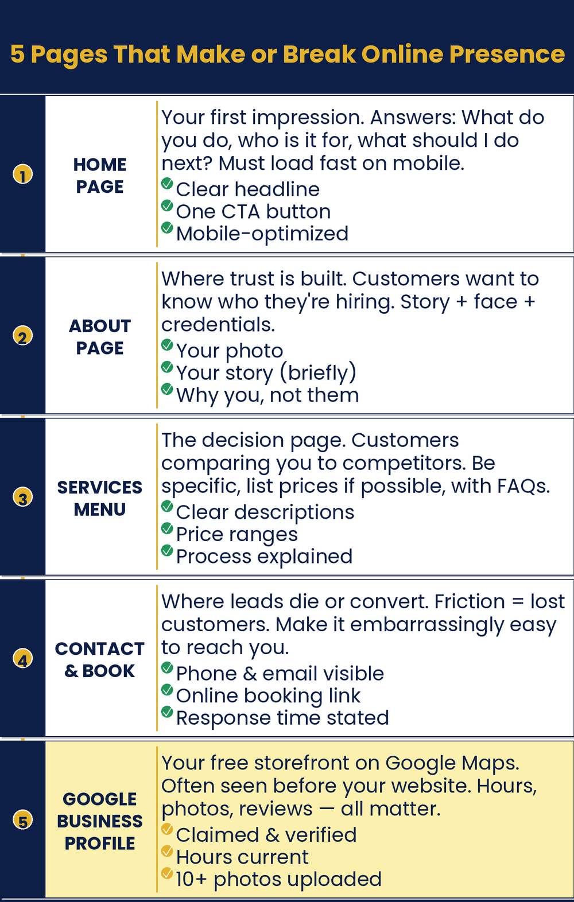

Chapter 10: Top the List. Win the Click.
Stop Playing Hide-and-Seek with Customers
How do I make sure people find me and like what they see?

Chapter Recap
When people search, you want to show up and get picked. This chapter helps with both. First, fix your website words so they speak to the customer, not about you. Five key pages do most of the work. Then set up your Google Business Profile, which many owners ignore. It is free, and it helps people find you. Clear pages and a strong profile turn searches into customers.
In This Chapter
- A Website on a Budget
- Your Website Copy: Pages That Sell
- SEO for Humans
- Your Google Business Profile: The Underused Asset
- How Your Profile Affects SEO
Grab-and-Go Prompts
1. Rewrite Your Homepage: speak to the customer, not about you
Rewrite my homepage copy to focus on my customers’ problem and how I solve it, rather than describing my business. My business is [description]. My ideal customer is [who they are]. Their biggest frustration before finding me is [frustration]. Their life is better after working with me because [result].
2. Rewrite Your About Page: lead with a story, not a bio
Rewrite my About page to connect my personal story to why I started this business and why that story matters to my customers. Lead with a moment, not a credential. Keep it under 200 words. Tone: [warm / direct / conversational].
3. Write a Service Description: run once per service
Write a description for [service or product name] at my [business type]. Lead with the problem my customer is trying to solve, explain how I solve it, and end with a clear next step. Keep it under 120 words. Tone: [your brand voice].
4. Write Your Contact Page: turn a form into a conversation
Write the copy for a Contact page for my [business type]. Open with a welcoming line that makes reaching out feel easy and worth doing. Include a brief note about how quickly we respond and what happens next after someone contacts us. Keep it under 75 words.
5. Write a Product Description: for online sellers
Write a product description for [product name and brief specs]. Lead with the customer benefit, not the features. Address the most common objection a hesitant buyer would have. End with a clear reason to buy now. Keep it under 100 words. Tone: [your brand voice].
6. Find Your Search Terms: see how customers search
What search terms would someone in [your city] use to find a [your type of business]? Give me twenty search phrases, ranging from broad to specific, including common questions they might ask Google.
7. Write an FAQ Page: answer real questions
Write an FAQ page for a [business type] in [city] that answers these common customer questions: [paste your list].
8. Write Page Titles and Meta Descriptions: basic SEO tags
Write a page title (under 60 characters) and meta description (under 155 characters) for my [page type] page. My business is [description]. The customer searching for this page wants [what they want].
9. Write Your Google Business Profile: the underused free asset
Write a Google Business Profile description for my [type of business]. It must be between 150 and 750 characters. Emphasize what makes us different, who we serve best, and what customers should do next. Keep the tone [friendly / professional / warm, your choice].
Download
- 📄 Be Found. Be Chosen. Prompt Pack: website copy prompts for all five essential pages, plus a Google Business Profile guide.
Your Move
Open your website and work through each of the four pages: Home, About, Services or Products, and Contact. Copy the existing text for each page and run it through the relevant prompt from this chapter. Then open your Google Business Profile (search your business name in Google and click “Edit Profile”) and check that your description, services list, and photos are complete. If you sell products online, run your top three product descriptions through the product prompt. None of these tasks take more than twenty minutes each.

Read the full chapter in
AI Jiu-Jitsu: Run Circles Around the Big Guys, the book this toolbox comes from.
Prefer to have it set up for you? BreakThru Growth offers AI coaching and done-for-you setup for small businesses → BreakThruGrowth.com